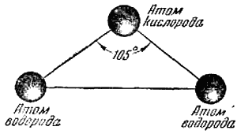

Молекула воды .

В жизни человека, как и в жизни всякого другого существа, вода играет громадную роль. Вода нужна для питья и для приготовления пищи, вода нужна для мытья. Давно человек понял и то, что вода необходима для его полей. Поэтому нет ничего удивительного, что ещё древние народы, жившие тысячелетия до нас, смотрели на воду как на особое вещество, первооснову всего существующего.
«Вода как жидкое, подвижное, всепроникающее, явилась началом всего» — учил около двух с половиной тысяч лет назад «греческий мудрец Фалес Милетский. Лет двести спустя крупнейший философ древнего мира Аристотель насчитывал уже несколько таких первооснов, „основных элементов“ мира, но среди них была и вода.
В высказываниях древних греков, какими бы эти высказывания ни казались нам сейчас по-детски наивными, уже отражалось глубокое понимание значения воды во всех явлениях природы и в жизни человека.
Прошло около 20 веков. Само понятие „элемент“ существенно изменилось. Химическим элементом стали считать простое вещество, которое уже не может быть разложено далее на более простые вещества. Число элементов всё увеличивалось и увеличивалось. В списке этих элементов опять значилась вода.
И этому были причины. Ведь учёные того времени, наблюдая различные явления, в которых участвует вода, никогда не замечали, чтобы она изменялась химически. На глазах их она затвердевала в лёд, но лёд при таянии давал ту же воду. Вода нагревалась до кипения и испарялась, но, охлаждаясь, пары снова собирались в капли воды. Вода как вещество оставалась во всех процессах „самой собой“ и её считали неразложимым, простым веществом.
Только в конце восемнадцатого столетия было сделано важное открытие, что вода есть сложное вещество: вода была получена искусственным путём, при сжигании газа водорода в кислороде. Этим было доказано, что вода состоит из водорода и кислорода.
Приблизительно в это же время сложный состав воды удалось доказать и обратным путём — разложением воды на составные части. Это сделал французский учёный Лавуазье. Через раскалённый ружейный ствол он пропускал пары воды. От действия высокой температуры вода разлагалась. Кислород соединялся с железом, и на внутренней поверхности ствола появлялась окалина (соединение железа с кислородом), а из ствола выходил газ водород.
А несколькими годами позже вода впервые была разложена на её составные части электрическим током. Этим путём было точно установлено, что в воде по весу находится 11,11 процента водорода и 88,89 процента кислорода, причём водорода выделяется из воды по объёму в два раза больше, чем кислорода.
Если оба эти выделившиеся газа смешать, то при комнатной температуре эта смесь может оставаться без изменения очень долго. Чтобы только одна шестая часть этой смеси превратилась в воду, нам пришлось бы ждать 54 миллиарда лет. Но стоит только поднести к этой смеси горящую спичку или пропустить через неё электрическую искру, как между кислородом и водородом моментально произойдёт химическая реакция: водород сгорит в кислороде, и в результате получится вода. Такой опыт надо проводить с большой осторожностью, так как горение всегда сопровождается взрывом большой силы. Поэтому смесь из двух объёмов водорода и одного объёма кислорода и названа гремучей смесью.
Чтобы вызвать реакцию между кислородом и водородом, вовсе не обязательно нагревать всю смесь. Достаточно нагреть самый незначительный её объём. В этом объёме начнётся процесс горения водорода — соединения его с кислородом. При этом выделяется очень много тепла (десять граммов гремучей смеси при горении дают такое количество тепла, которого достаточно, чтобы вскипятить почти пол-литра воды). Выделяющееся тепло передаётся соседним участкам смеси, и процесс горения с чрезвычайной быстротой распространяется по всему объёму.
Температура в пламени гремучего газа превышает 3000 градусов. Поэтому гремучий газ и применяют для автогенной сварки.
Итак, вода — это сложное вещество, состоящее из кислорода и водорода. Как же построена молекула воды? Как располагаются в ней атомы кислорода и водорода?
Современная наука располагает очень точными методами исследования, которые позволяют проникнуть в строение вещества так глубоко, что уже теперь с полной уверенностью можно говорить не только о том, из каких атомов составлены молекулы того или другого вещества, но и о том, как располагаются атомы в молекулах. Каждая молекула воды состоит из трёх атомов: одного атома кислорода и двух атомов водорода. Все три атома расположены в молекуле таким образом, что если мысленно соединить их линиями, то образуется равнобедренный треугольник, то есть треугольник, у которого две стороны равны (рис. 3). В вершине находится атом кислорода, а в двух углах при основании — по атому водорода. Расстояния между атомом кислорода и водородными атомами одинаковы и равны 97 десятимиллиардным долям сантиметра. Расстояние между атомами водорода равно 154 десятимиллиардным долям сантиметра, а угол при вершине, в которой находится атом кислорода, составляет около 105 градусов. Если размер молекулы увеличить в десять миллиардов раз, этот треугольник поместился бы на столе среднего размера.

Рис. 3. Расположение атомов в молекуле воды.
Читатель может спросить: почему атомы в молекуле воды расположены в виде треугольника, а не по прямой линии — в середине атом кислорода, а по краям атомы водорода?
Объяснить это можно так. Всякое тело в природе стремится занять наиболее устойчивое положение. Мяч, брошенный на гладкую крышу, не останется лежать на её покатой поверхности и под действием силы тяжести обязательно скатится вниз. Если мы привяжем к нитке какой-нибудь грузик и будем держать нитку за свободный конец, грузик натянет нить и расположится точно по отвесной линии. Отведём грузик немного в сторону и отпустим, — грузик не останется в новом неустойчивом состоянии и под действием силы тяжести быстро вернётся к своему первоначальному положению. Так и в молекуле воды. Атомы соединены в ней друг с другом силами, которые называют силами химического сродства. Величина и направление действия этих сил таковы, что молекула воды является устойчивой именно тогда, когда атомы образуют треугольник. Всякая другая „постройка“ из атомов оказывается менее устойчивой. И если по каким-либо причинам расположение „атомов“ изменится, то по устранении этой причины атомы вновь образуют такой же треугольник.
Нужно сказать, что силы, удерживающие атомы водорода и кислорода в молекуле воды, весьма велики. Необходима очень большая энергия, чтобы связь между атомами „разорвалась“. Мы можем нагреть воду до 1400 градусов, и из миллиона молекул воды при этой температуре только около ста молекул окажутся разложенными на водород и кислород. Даже при 3092 градусах разрушается только 13 процентов всех молекул воды.
Любая вода, откуда бы она ни была взята, — из Северного Ледовитого океана, из глубокой шахты Донбасса, была заключена в снежинке или сверкала ранним утром в капельке росы на цветке, — любая вода состоят из одинаково построенных молекул. Однако взаимное расположение отдельных молекул друг относительно друга в жидкой воде, снежинке или в паре из парового котла оказывается неодинаковым.
Пары воды, нагретые градусов до трёхсот, при атмосферном давлении подобны обычным газам: в них расстояния между молекулами достаточно велики, так что каждая отдельная молекула может существовать более или менее самостоятельно, не испытывая существенного взаимодействия со стороны своих соседей, за исключением, конечно, тех случаев, когда молекулы в результате беспорядочного теплового движения сталкиваются друг с другом.
В снежинке или кусочке льда молекулы сближены и закреплены в определённых местах кристаллической решётки; движения молекул в большинстве своём ограничиваются колебанием около некоторых средних положений.
А как располагаются молекулы в жидкой воде?
В науке до сих пор ещё нет строгой, твёрдо установленной теории, касающейся строения жидкостей, в частности воды. Предполагается, что жидкая вода по своему строению представляет нечто среднее между кристаллами льда и паром. Изучение строения воды с помощью инфракрасных и рентгеновых лучей дало возможность считать, что при температурах, близких к точке замерзания, молекулы жидкой воды собираются в небольшие группы и „упаковываются“ в пространство приблизительно так, как в кристаллах, а при температурах, близких к точке кипения воды, при нормальном давлении, они располагаются более свободно, беспорядочно. Однако „каркас“, составленный в жидкой воде из отдельных молекул, должен быть очень гибким. Иначе трудно было бы объяснить подвижность воды, способность её быть „рабочим телом“, приводящим в движение тяжёлое колесо турбины, и переносчиком различных питательных веществ по тончайшим сосудам живых организмов.
По-видимому, и в водяном паре при невысоких температурах часть молекул воды объединена или, как говорят, ассоциирована.
Вода — самая распространённая в природе жидкость. Мы так привыкли к воде, к её разнообразным проявлениям, что она нам кажется самой обыкновенной жидкостью. Многие свойства воды положены в основу нашей измерительной системы. Температуру таяния льда мы считаем за нуль градусов, а температуру кипения за сто градусов (по принятой теперь почти всюду шкале Цельсия). Массу воды в объёме одного кубического сантиметра мы принимаем за меру массы — один грамм. Количество тепла, которое поглощает один грамм воды при нагревании на один градус, мы называем единицей теплоты — калорией. Многие измерительные приборы физиков и химиков градуируются по воде, и величины, измеренные для других веществ, обычно сравниваются с числами, полученными для воды. Но если мы внимательно присмотримся к поведению воды в различных условиях и сравним его с поведением большинства других жидкостей, то обнаружим, что наша „обыкновенная“ жидкость ведёт себя очень странно, если этими словами можно выразить своеобразный характер воды, резко отличающий её от всех других жидкостей.
Теперь мы и расскажем о некоторых самых важных и интересных свойствах воды и её отступлениях от общих „правил“ поведения жидкостей.